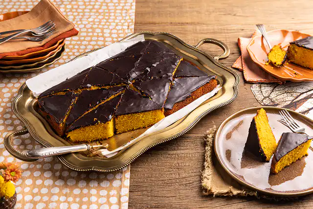

Receita de Bolo de cenoura
Receita para uma massa de bolo de cenoura fofinha e cremosa
com cobertura de chocolate deliciosa!
Ingredientes
- 3 cenouras médias descascadas e raladas;
- 4 ovos em temperatura ambiente
- 1 xícara (chá) de óleo
- 1½ xícara (chá) de açúcar
- 2 xícaras (chá) de farinha de trigo
- 1 colher (sopa) de fermento em pó
- 1 pitada de sal
- manteiga e farinha de trigo para untar e polvilhar a fôrma
Modo de preparo
- Preaqueça o forno a 180 ºC (temperatura média). Unte com manteiga uma fôrma retangular
de 30 cm x 20 cm e 5 cm de altura. Polvilhe farinha de trigo, chacoalhe para cobrir todo o fundo
e as laterais e bata na pia para tirar o excesso.
- Numa tigela, coloque a farinha, o sal e o fermento, passando pela peneira.
Misture e reserve.
- Lave e descasque as cenouras. Descarte a ponta da rama. Corte cada uma em rodelas e transfira para
o liquidificador
a cenoura cortada em rodelas é triturada mais facilmente.
- Junte o óleo às cenouras cortadas. Numa tigela pequena, quebre um ovo
de cada vez e transfira para o liquidificador se algum estiver estragado,
você não perde a receita. Acrescente o açúcar e bata bem até ficar liso, por cerca de 5 minutos.
- Transfira a mistura líquida para uma tigela grande e adicione os secos em 3 etapas, passando pela peneira.
Misture delicadamente com um batedor de arame a cada adição para incorporar.
- Transfira a massa para a fôrma e leve ao forno para assar por cerca de 45 minutos.
Para saber se o bolo está pronto, espete um palito na massa: se sair limpo,
pode tirar do forno; caso contrário, deixe assar por mais alguns minutos.
- Retire o bolo do forno e deixe esfriar por 15 minutos antes de preparar a cobertura
o bolo deve estar morno na hora de colocar a cobertura de chocolate.
Para a cobertura
Ingredientes
- ½ xícara (chá) de chocolate em pó (50% de cacau)
- ⅓ de xícara (chá) de açúcar
- 1 colher (sopa) de manteiga
- ⅓ de xícara (chá) de água
Modo de preparo
- Numa panela pequena, coloque o chocolate, o açúcar, a manteiga e a água. Leve ao fogo médio mexendo com o batedor de arame até ferver.
Após a fervura, mexa por mais 2 minutos, ou até que a calda
forme bolhas grandes e esteja com a espessura mais grossa a agitação da calda é essencial para que ela cristalize e endureça depois.
- Desligue o fogo e mexa com uma espátula de silicone por cerca de 2 minutos, até a mistura parar de ferver
esse passo é essencial para que a calda não escorra do bolo.
- Regue o bolo com a calda e rapidamente espalhe com uma espátula para cobrir toda a superfície.
Deixe a calda esfriar completamente com o bolo, até a superfície endurecer, antes de servir.
DICA: se preferir, corte o bolo na assadeira antes de regar com a calda para ficar mais fácil de servir depois.